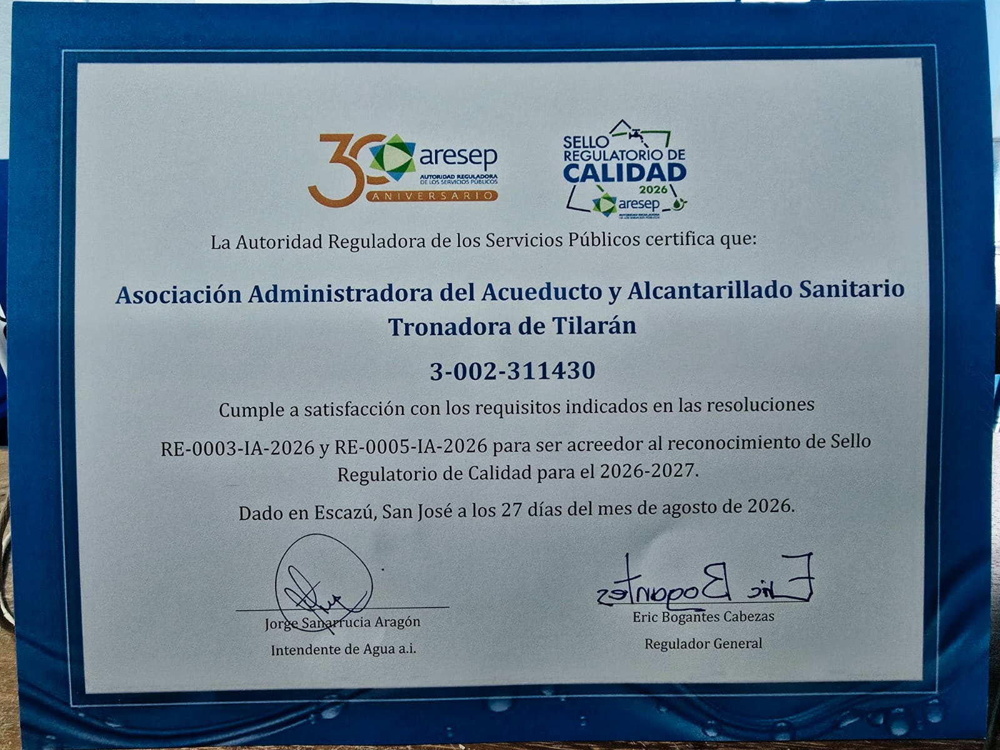

Sello Regulatorio de Calidad 2026 a 2027
La Autoridad Reguladora de los Servicios Públicos (ARESEP) otorgó a la ASADA de Tronadora el reconocimiento del Sello Regulatorio de Calidad para el período 2026 a 2027.
Este reconocimiento fue otorgado el 27 de agosto de 2026.